💹 Flash Boys & Algorithmic Trading
1. Latency Race
File: latency_race.gif | Source: flash_boys_gifs.py
Shows how HFT (High-Frequency Trading) algorithms can see investor orders and jump ahead in microseconds.
Demonstrates the race between a regular investor order and an HFT order that exploits latency advantages.
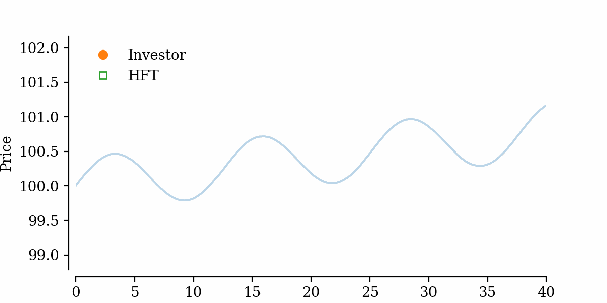
2. Liquidity Vanish
File: liquidity_vanish.gif | Source: flash_boys_gifs.py
Visualizes how order book depth can thin out rapidly during market stress. Shows bids near the mid-price
vanishing during a large sell event, then gradually recovering.
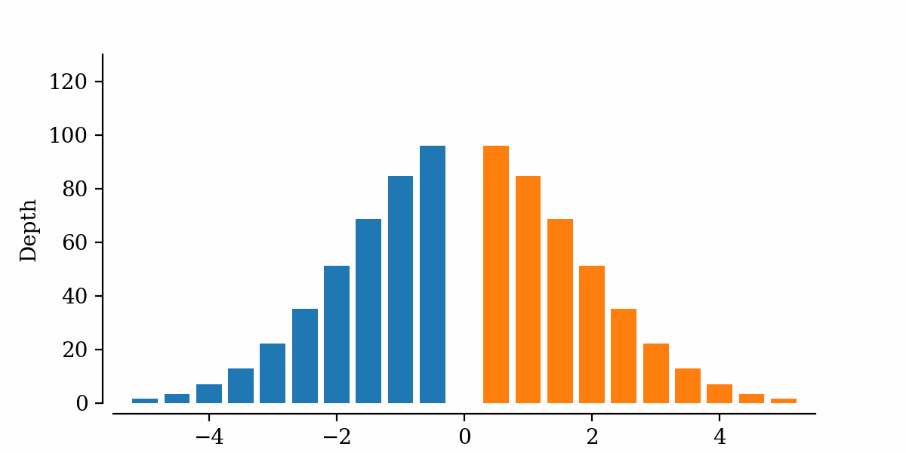
3. Flash Crash Path
File: flash_crash_path.gif | Source: flash_boys_gifs.py
Animated marker following the index price path during a flash crash scenario. Shows how a normal market
can turn into a cliff and then snap back, demonstrating algorithmic chain reactions.
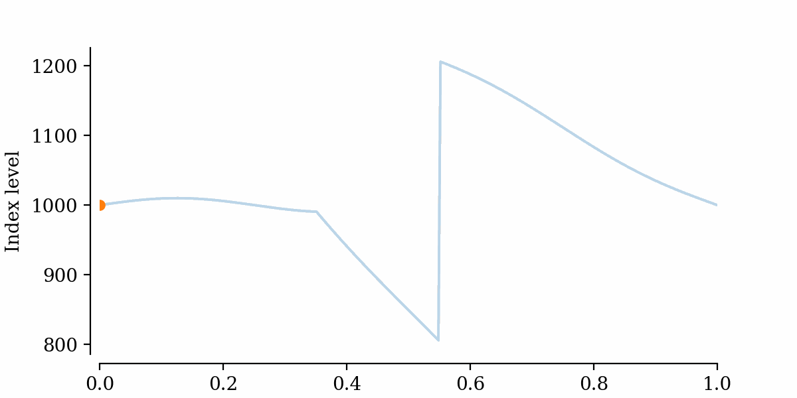
4. Hot Potato
File: hot_potato.gif | Source: flash_boys_gifs.py
Illustrates how futures contracts bounce between mutual funds, HFT firms, and the rest of the market
during a flash crash. Shows the "hot potato" effect where algorithms pass risk back and forth.
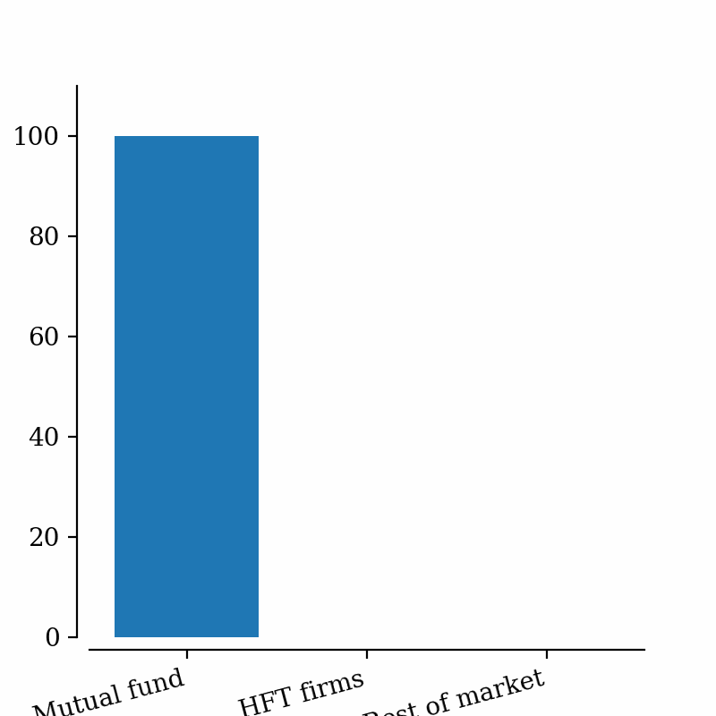
5. Speed Bump
File: speed_bump.gif | Source: flash_boys_gifs.py
Demonstrates IEX's 350-microsecond speed bump solution. First half shows the baseline race where fast traders win;
second half shows how the speed bump equalizes the playing field.
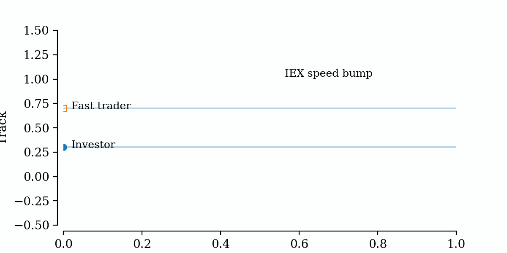
6. Algorithmic Trading
File: algorithmic_trading.gif | Source: algorithmic_trading_gif.py
Shows a rule-based trading algorithm using moving averages. Displays buy signals (upward triangles) when
price crosses above MA, and sell signals (downward triangles) when price crosses below MA.
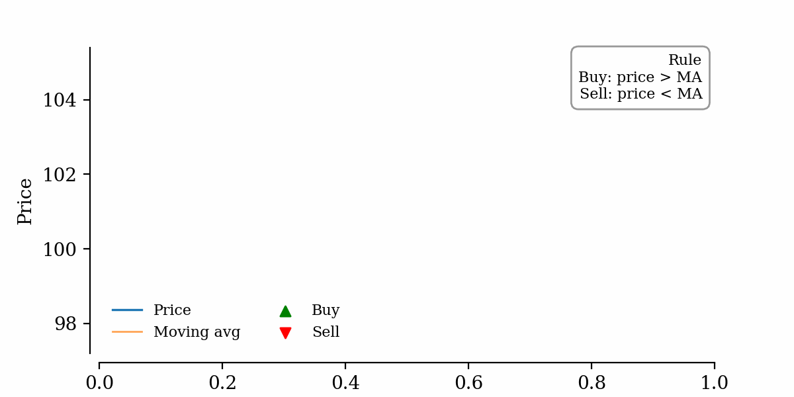
🔗 Markov Chains & Language Models
7. Stage-Dependent Markov Chain
File: stage_dependent_markov.gif | Source: markov_chains_learning.py
Shows how state probabilities evolve in a stage-dependent Markov chain. Three states (S0, S1, S2) with
changing transition matrices across different stages. Includes the transition matrix display on the right.
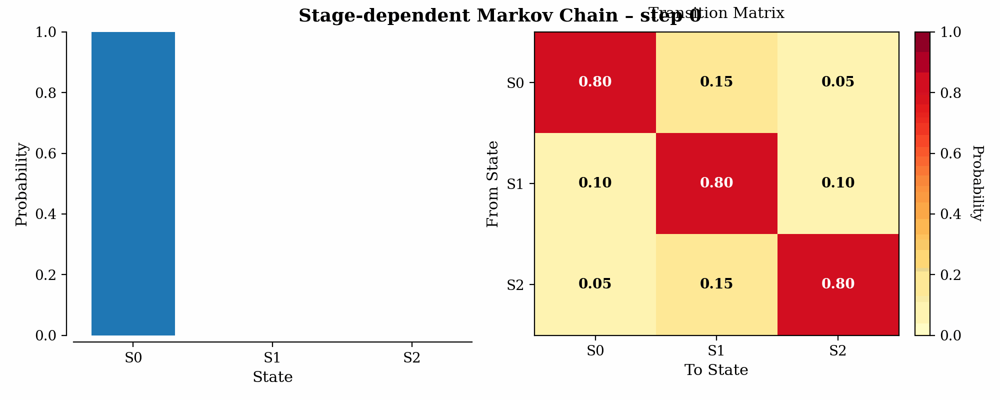
8. Cloze Sentences (Fill-in-the-Blank)
File: markov_stage_cloze.gif | Source: markov_chains_learning.py
Fill-in-the-blank examples showing language prediction:
- "Mary had a little ____" → lamb
- "United States of ____" → America
- "Happy birthday to ____" → you
The missing word appears in orange after a pause.
9. Text Prediction Chain
File: text_prediction_chain.gif | Source: markov_chains_learning.py
Visualizes next-word prediction as a Markov chain. Shows probability bars for three candidate words
(tea, coffee, water) for the phrase "I would like a cup of ____". Probabilities shift toward "coffee"
as the chain gains confidence.
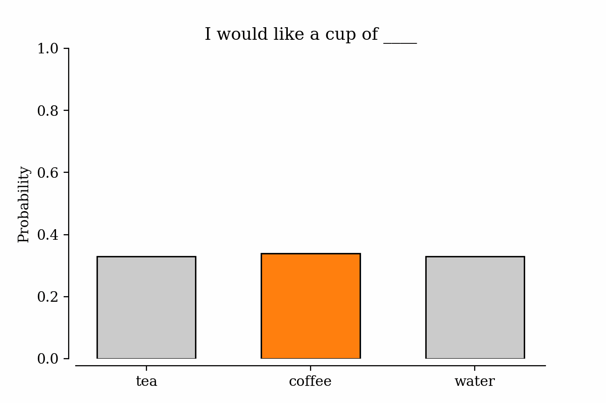
10. Health States
File: health_states_markov.gif | Source: health_and_website_markov.py
Health state transitions (Healthy → Sick → Recovered) modeled as a Markov process. Shows probability
distribution evolving over time with stage-dependent transition matrices favoring recovery in later stages.
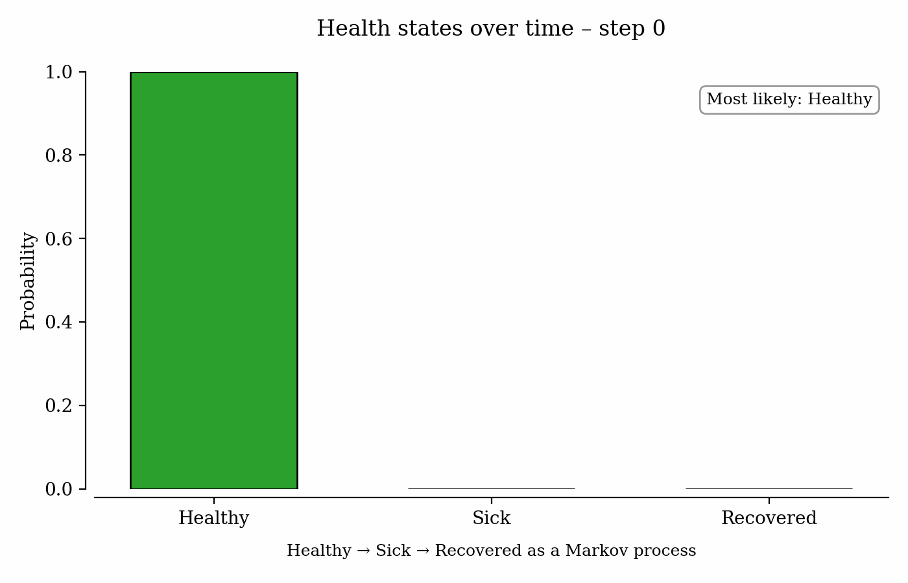
11. Website Journey
File: website_journey_markov.gif | Source: health_and_website_markov.py
E-commerce user journey as a Markov chain. A dot moves through states: Home → Product → Cart → Purchase → Exit.
Traces the path of a single simulated user session with a line showing the full journey.
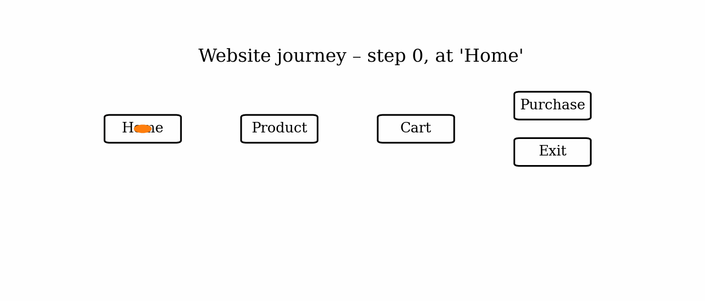
12. GPT Translation Through Meaning
File: gpt_translation_meaning.gif | Source: gpt_translation_meaning.py
Illustrates GPT-style translation through meaning space. Shows English sentence → Meaning cloud (embeddings)
→ Spanish sentence. An orange dot travels through the three stages, demonstrating how models convert to
semantic representations before generating output.
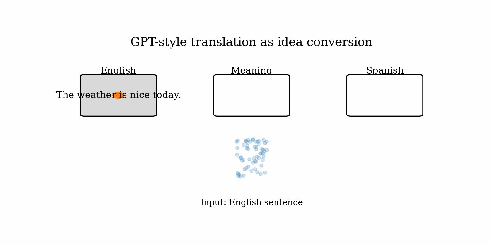
13. N-grams, Context & Chunks
File: ngrams_context_chunks.gif | Source: ngrams_context_chunks.py
Three-phase visualization showing evolution from simple to complex context:
- Next-word prediction: Shows probability bars for candidate words
- N-gram context: Sliding 3-word window highlights context used for prediction
- Paragraph chunking: Demonstrates how models use larger text chunks for understanding topic and meaning
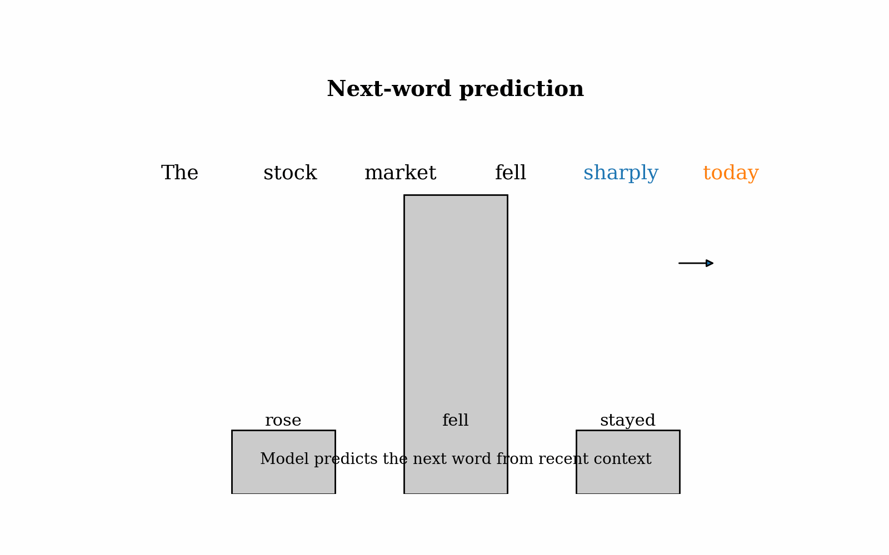
🎓 AI Educational Concepts
14. Prompt Refinement
File: prompt_refinement.gif | Source: ai_educational_gifs.py
Shows how prompts improve iteratively from basic ("Write essay") to detailed specifications,
with a quality meter showing improvement from 30% to 90%.
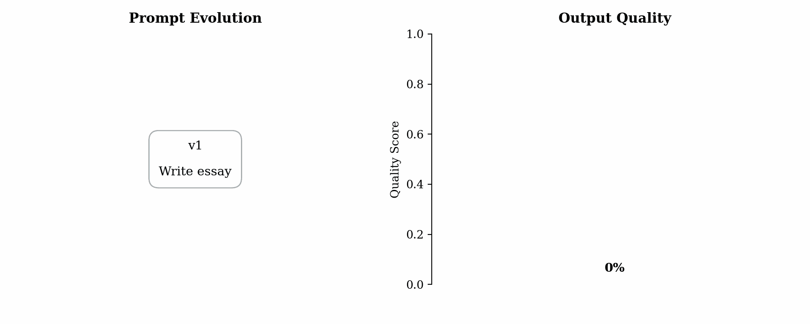
15. Drift Over Time
File: drift_over_time.gif | Source: ai_educational_gifs.py
Demonstrates model performance degrading over time as data distribution changes,
crossing below the acceptable threshold with a warning indicator.
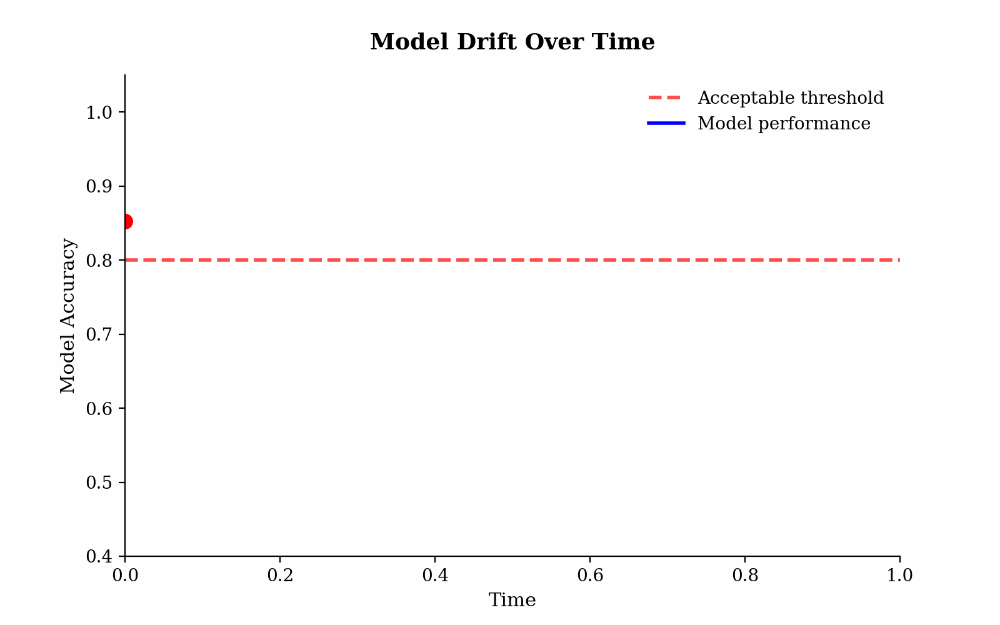
16. Clustering Emergence
File: clustering_emergence.gif | Source: ai_educational_gifs.py
Shows data points gradually appearing and forming three distinct clusters with K-means algorithm,
with centroids marked by red X symbols.
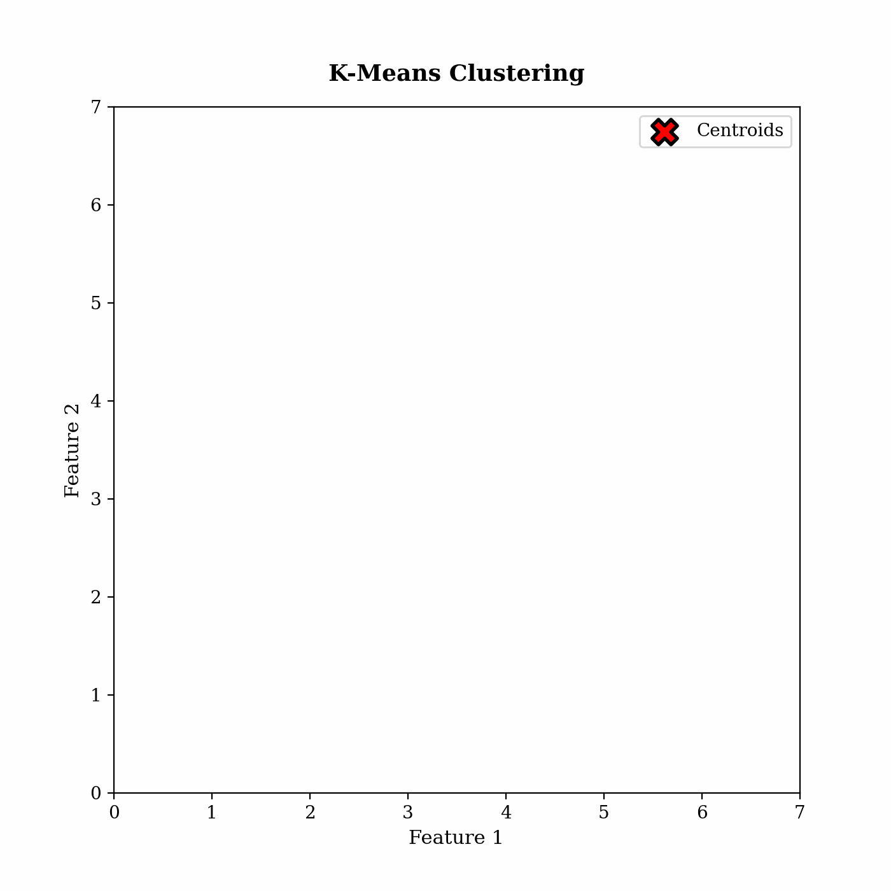
17. Regression Best Fit
File: regression_bestfit.gif | Source: ai_educational_gifs.py
Animates a line rotating to find the optimal fit for scattered data points,
demonstrating how linear regression works.
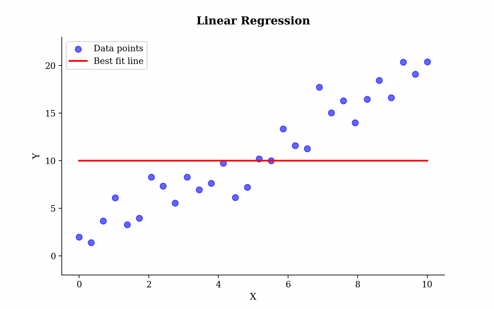
18. Anomaly Detection
File: anomaly_detection.gif | Source: ai_educational_gifs.py
Highlights outliers (red X markers) that fall outside the normal distribution boundary
(shown as a green circle around the cluster).
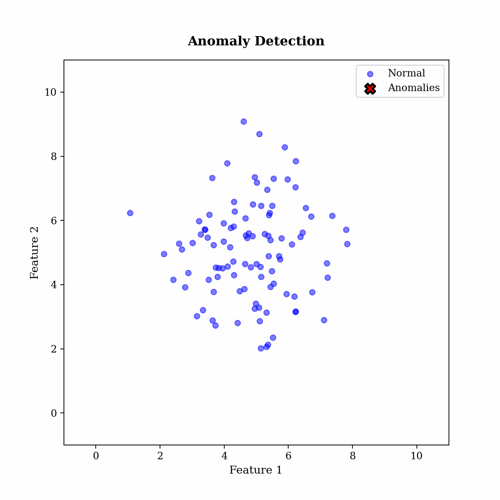
19. Sequence vs Random
File: sequence_vs_random.gif | Source: ai_educational_gifs.py
Side-by-side comparison showing predictable sine wave pattern (top) versus random noise (bottom),
illustrating the difference between learnable patterns and unpredictable data.
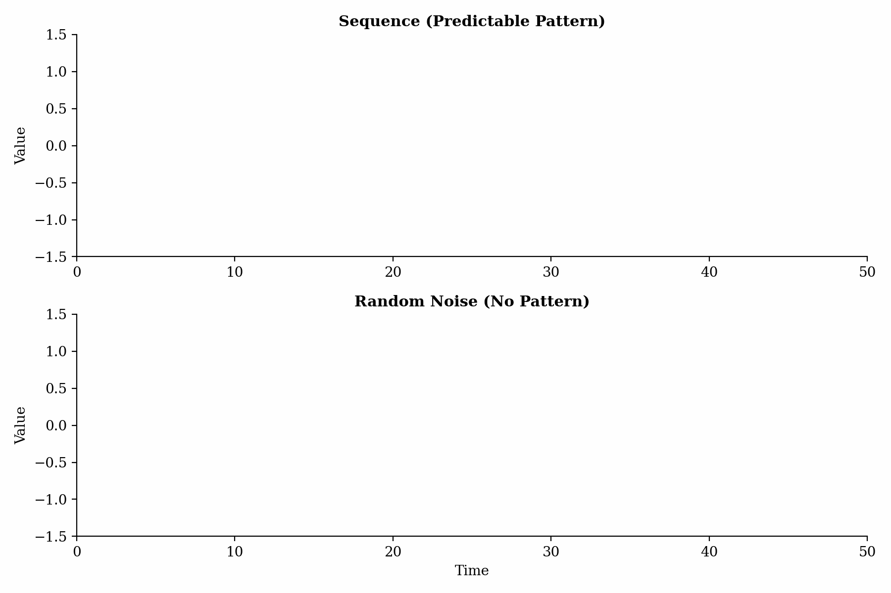
20. Forecast vs Reality
File: forecast_vs_reality.gif | Source: ai_educational_gifs.py
Shows historical data (blue), forecasted values (green dashed), and actual values (red),
demonstrating how predictions can diverge from reality over time.
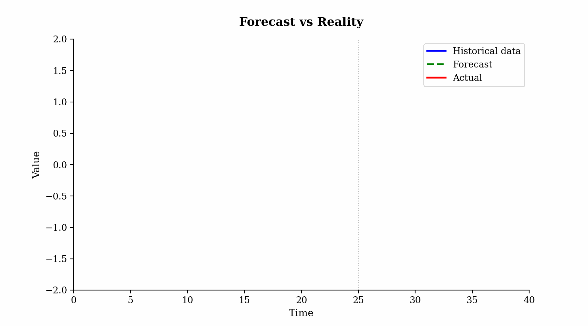
21. Bias in Training Data
File: bias_in_training.gif | Source: ai_educational_gifs.py
Side-by-side comparison of balanced dataset (50% A, 50% B) versus biased dataset (80% A, 20% B),
showing how imbalanced training data can affect model learning.
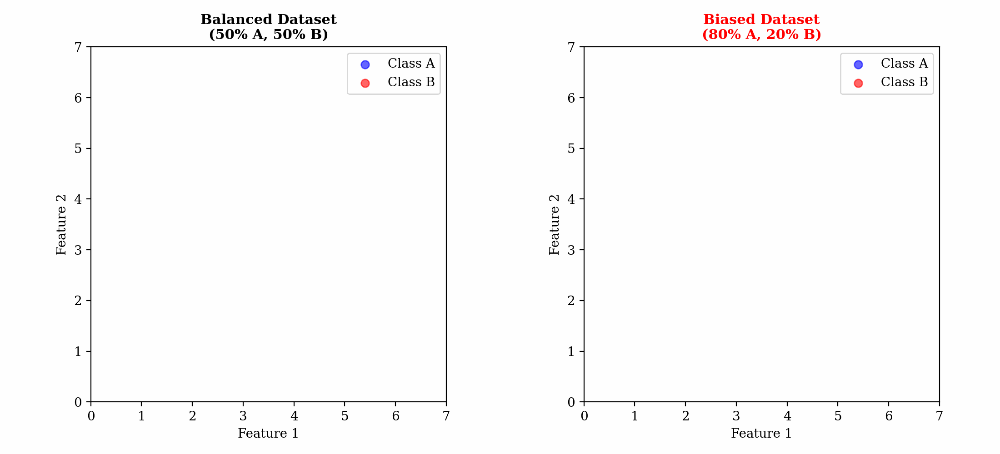
22. Human in the Loop
File: human_in_loop.gif | Source: ai_educational_gifs.py
Illustrates the continuous feedback cycle: Training Data → AI Model → Predictions → Human Review →
back to Training Data, showing how human oversight improves AI systems.
23. Cost vs Value
File: cost_vs_value.gif | Source: ai_educational_gifs.py
Shows the tradeoff between development cost (red curve) and business value (green curve),
with net value (blue dashed) and optimal complexity point (purple line) clearly marked.
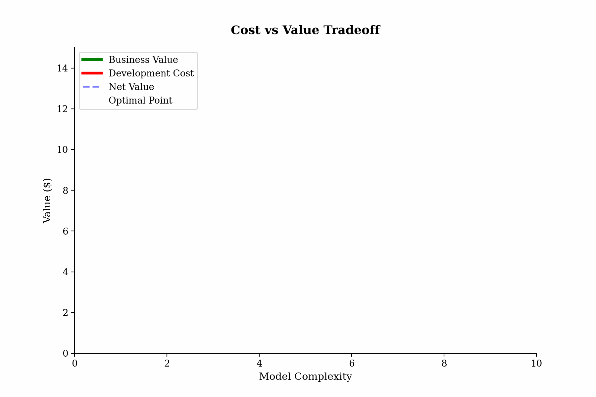
Generated: December 29, 2025 | Total Size: ~12 MB
All visualizations created with Python, Matplotlib, and NumPy